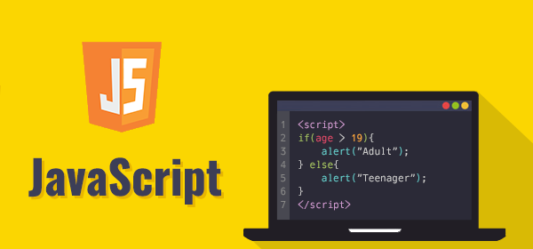
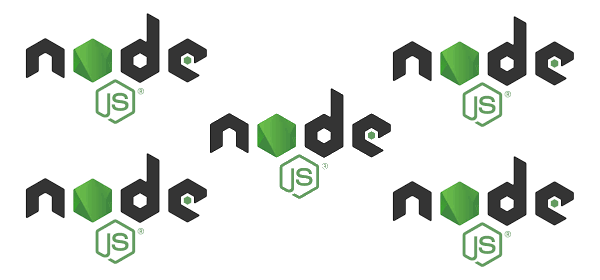

HTML
HTML (от англ. HyperText Markup Language — «язык гипертекстовой разметки») — стандартизированный язык гипертекстовой разметки документов для просмотра веб-страниц в браузере. Веб-браузеры получают HTML документ от сервера по протоколам HTTP/HTTPS или открывают с локального диска, далее интерпретируют код в интерфейс, который будет отображаться на экране монитора.
Элементы HTML являются строительными блоками HTML страниц. С помощью HTML разные конструкции, изображения и другие объекты, такие как интерактивная веб-форма, могут быть встроены в отображаемую страницу. HTML предоставляет средства для создания заголовков, абзацев, списков, ссылок, цитат и других элементов. Элементы HTML выделяются тегами, записанными с использованием угловых скобок. Такие теги, как img и input, напрямую вводят контент на страницу. Другие теги, такие как p, окружают и оформляют текст внутри себя и могут включать другие теги в качестве подэлементов. Браузеры не отображают HTML-теги, но используют их для интерпретации содержимого страницы.
Язык XHTML является более строгим вариантом HTML, он следует синтаксису XML и является приложением языка XML в области разметки гипертекста.
В HTML можно встроить программный код на языке программирования JavaScript, для управления поведением и содержанием веб-страниц. Также включение CSS в HTML описывает внешний вид и макет страницы.
CSS
CSS (англ. Cascading Style Sheets «каскадные таблицы стилей») — формальный язык описания внешнего вида документа (веб-страницы), написанного с использованием языка разметки (чаще всего HTML или XHTML). Также может применяться к любым XML-документам, например, к SVG или XUL.
CSS используется создателями веб-страниц для задания цветов, шрифтов, стилей, расположения отдельных блоков и других аспектов представления внешнего вида этих веб-страниц. Основной целью разработки CSS является ограждение и отделение описания логической структуры веб-страницы (которое производится с помощью HTML или других языков разметки) от описания внешнего вида этой веб-страницы (которое теперь производится с помощью формального языка CSS). Такое разделение может увеличить доступность документа, предоставить большую гибкость и возможность управления его представлением, а также уменьшить сложность и повторяемость в структурном содержимом.
Кроме того, CSS позволяет представлять один и тот же документ в различных стилях или методах вывода, таких как экранное представление, печатное представление, чтение голосом (специальным голосовым браузером или программой чтения с экрана) или при выводе устройствами, использующими шрифт Брайля.
JavaScript
JavaScript — мультипарадигменный язык программирования. Поддерживает объектно-ориентированный, императивный и функциональный стили. Является реализацией спецификации ECMAScript (стандарт ECMA-262).
JavaScript обычно используется как встраиваемый язык для программного доступа к объектам приложений. Наиболее широкое применение находит в браузерах как язык сценариев для придания интерактивности веб-страницам.
Основные архитектурные черты: динамическая типизация, слабая типизация, автоматическое управление памятью, прототипное программирование, функции как объекты первого класса.
На JavaScript оказали влияние многие языки, при разработке была цель сделать язык похожим на Java. Языком JavaScript не владеет какая-либо компания или организация, что отличает его от ряда языков программирования, используемых в веб-разработке.
Node.js
Node.js — программная платформа, основанная на движке V8 (компилирующем JavaScript в машинный код), превращающая JavaScript из узкоспециализированного языка в язык общего назначения. Node.js добавляет возможность JavaScript взаимодействовать с устройствами ввода-вывода через свой API, написанный на C++, подключать другие внешние библиотеки, написанные на разных языках, обеспечивая вызовы к ним из JavaScript-кода. Node.js применяется преимущественно на сервере, выполняя роль веб-сервера, но есть возможность разрабатывать на Node.js и десктопные оконные приложения (при помощи NW.js, AppJS или Electron для Linux, Windows и macOS) и даже программировать микроконтроллеры (например, tessel, low.js и espruino). В основе Node.js лежит событийно-ориентированное и асинхронное (или реактивное) программирование с неблокирующим вводом/выводом.
В 1996 году в компании Netscape были попытки создания серверного JavaScript (Server-side JavaScript — SSJS), однако технология не получила распространения.
Node.js разработал Райан Даль в 2009 году после двух лет экспериментирования над созданием серверных веб-компонентов. В ходе своих исследований он пришёл к выводу, что вместо традиционной модели параллелизма на основе потоков следует обратиться к событийно-ориентированным системам. Эта модель была выбрана из-за простоты, низких накладных расходов (по сравнению с идеологией «один поток на каждое соединение») и быстродействия. Целью Node является предложить «простой способ построения масштабируемых сетевых серверов».